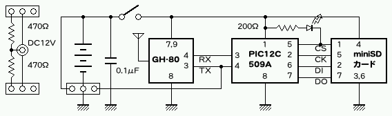

| 種別 | 型番 | 数 | 重量 |
|---|---|---|---|
| バッテリー | 3HB70 | 1 | 11.2g |
| GPSモジュール | GH-80 | 1 | 10.6g |
| フィルムケース | 富士写真フィルム製 | 1 | 5.7g |
| プリント基板 | - | 1 | 1.3g |
| メモリカードアダプタ | miniSD→SD | 1 | 1.1g |
| メモリカード | miniSDカード | 1 | 0.9g |
| マイコン | PIC12C509A | 1 | |
| C | 0.1μF | 1 | |
| R | 200Ω | 1 | |
| LED | - | 1 | |
| ジャンパスイッチ | 2P | 1 | |
| コネクタ | SM09B-SSR-H-TB | 1 | |
| ピンヘッダ | 3×1P | 1 | |
| スズめっき線 | |||
| 絶縁テープ | |||
| 合計 | 32.3g | ||
| 種別 | 型番 | 数 |
|---|---|---|
| タイマー | AC100V 8時間 | 1 |
| ACアダプタ | AC100V→DC12V | 1 |
| DCジャック | 1 | |
| R | 470Ω | 2 |
| ピンヘッダ | 4×1P | 1 |
| コネクタ | 3P | 2 |
| コネクタ | 4P×1 | 1 |
| リード線 | ||
| 熱収縮チューブ |
基板は軽量化のため0.8mm厚にしましたが、これは重要ではありません。パターンが複雑なのは、ピン配置を試作版(片面基板)と同じにしたためです。大きい丸は、当初ボタン電池を使う計画だった名残りです。

基板は、DIP部品でも表面実装部品でも取りつけられるようになっています。
マイコン(PIC12C509A)は、DIP版の場合は外側の穴を、表面実装版であれば内側のパターンを使ってください。
GPSコネクタは、DIP版の場合は4Pのピンヘッダを、表面実装版であればパターンを使ってください。DIP版の場合、GPSモジュールからの配線を4Pのコネクタに変換する必要があります。
CRとLEDは、DIP部品と表面実装部品のどちらでも使えるようになっています。Cについては穴の間隔も2種類用意してあります。
GPSモジュールの金属部分が基板と接触しないように、絶縁テープを貼ってください。
マイコンは、プログラムを書き込んだ状態で取りつけてください。DIP版の場合はICソケットを使用することもできます。
なお、コネクタとメモリカードに何も接続しない状態であれば、書き込みに必要な端子はオープンになりますので、実装後の書き込みも可能です。なお、筆者の環境ではV+(ピン1)をライターに接続した状態では、パスコンの影響かうまく読み書きできませんでした。
設計変更の経緯により、3端子レギュレータのパターンが残っています。単3電池などで駆動する場合には、3端子レギュレータを実装すると3.3Vを作ることができます。電源は充電コネクタから供給します。
3端子レギュレータのピン配置に合わせられるように、2種類の穴が用意してあります。センターグランドのタイプであれば、表面実装にも対応しています。

端子部にスズめっき線を半田付けしておき、これを基板に半田付けします。全部の部品の半田付けが終わったら、スズめっき線の部分で2つに折るようにして、基板に重ねます。

メモリカードアダプタには、熱に弱い種類もあるようなので、注意してください。
現状の基板では、バッテリーの足をうまく曲げる必要があります。面倒であれば、メモリカードアダプタのマイナス端子につないでしまっても構わないと思います。
DCジャックのマイナス端子を少し細く加工して、4Pのピンヘッダを差し込み、半田付けして固定します。DCジャックのプラス端子から、ピンヘッダの両側の端子に、それぞれ抵抗を半田付けします。絶縁のため、この状態で熱収縮チューブをかけるとよいでしょう。あとはコネクタを配線して完了です。観測記録部のコネクタは、中央のピンがマイナスです。

タイマーは、家庭用の12時間タイマーを使いました。「オフのみ」が指定できるタイプであれば、24時間タイマーも使用できます。
メモリカードはあらかじめFAT16でフォーマットし、gps.logという記録用ファイルを格納しておきます。gps.logは自動的には大きくならないので、あらかじめ記録するサイズに合わせて大きくしておきます。
gps.logはルートディレクトリの最初の16エントリ以内に置く必要がありますが、フォーマット直後に1ファイルだけコピーすれば、問題ありません。また、FAT16でフォーマットする環境が用意できない場合は、確実にFAT16でフォーマットされている256MBのメモリカードを使用する方法もあります。
ファイル名がgpsd.logになっていると、衛星捕捉まではメモリカードへの記録がおこなわれません。
PHPとGD2が動作するHTTPサーバが必要です。無償で入手できるものとしてはApacheがあり、商用サーバなどで数多くの実績があります。Windows版もUNIX版もありますので、環境に合ったものを選択してください。なお、いわゆるホスティングサービスでは、これらがはじめから提供されているものも多数あります。
PHPはサーバサイド言語で、HTTPサーバからCGIで起動するか、またはHTTPサーバにモジュールを組みこんで使用します。また、PHPにはGDエクステンションを組みこんでおく必要があります。ここまでの作業は、インターネットや書籍にさまざまな情報が出ていますので、参照してください。
設定が正しければ、glogana.phpをHTTPサーバからアクセスできるディレクトリに置き、webブラウザからアクセスすると、解析画面が表示されます。

{kind=link}
{kind=link}